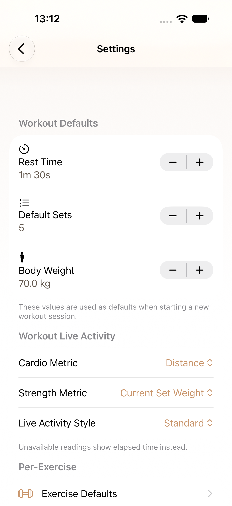
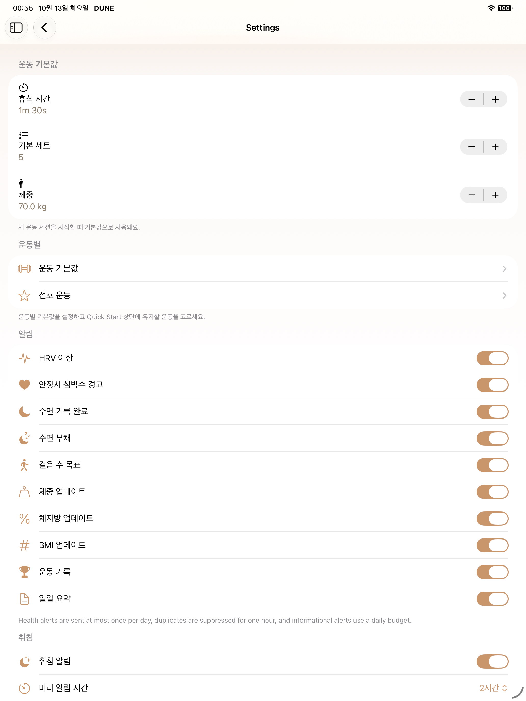
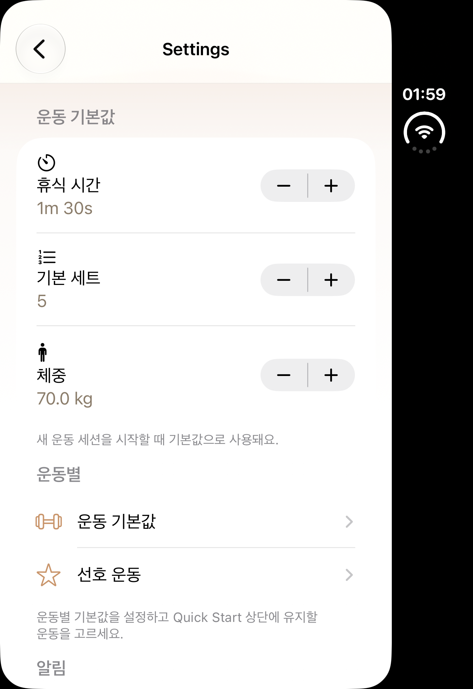
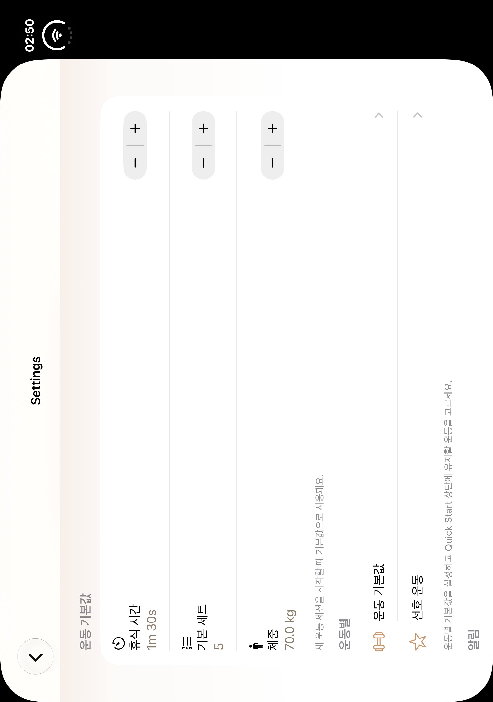
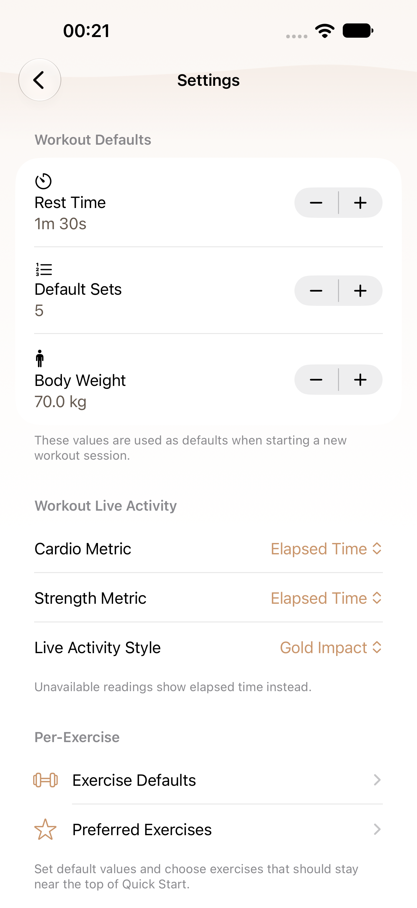
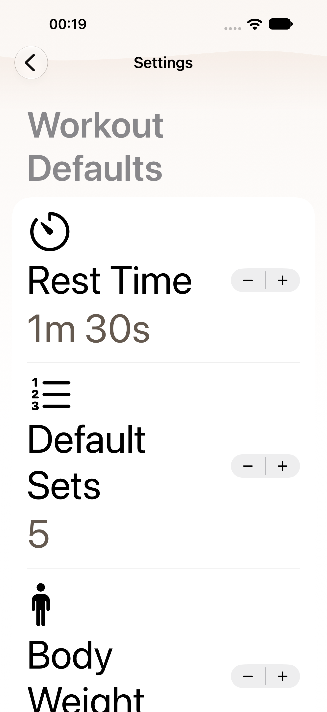
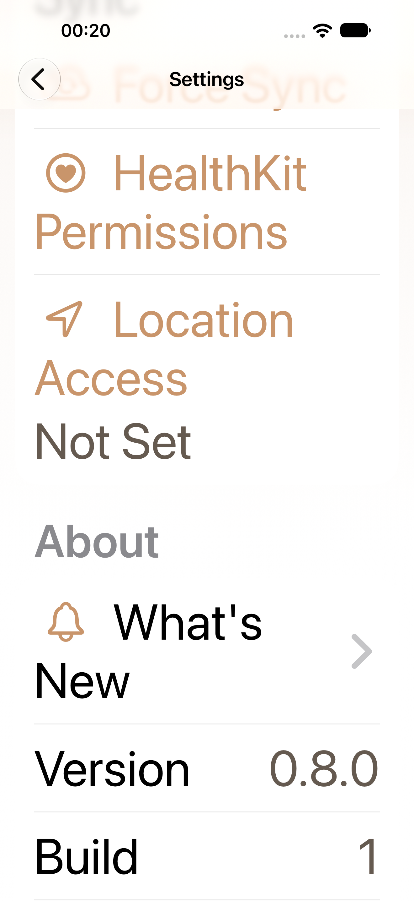
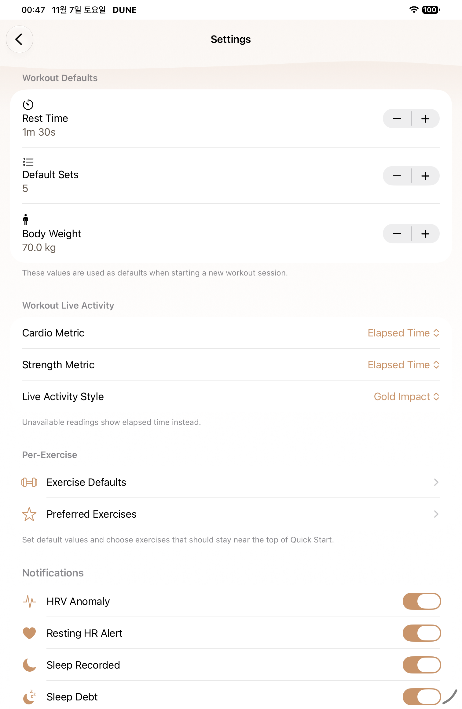

S01 · B07 native gallery
Selected native PNG/AX pairs. Historical before captures and diagnostics are separate; source/test/count limits are in manifest.
Pending or limited- phone-retry1 Current normal Settings top controls: capture absent or selector not executed; Completed mixed result; only nonfailed requested selectors attributed
- phone-retry1 Current MAX Settings top controls: capture absent or selector not executed; Completed mixed result; only nonfailed requested selectors attributed
- phone-retry1 Current MAX Settings final section: capture absent or selector not executed; Completed mixed result; only nonfailed requested selectors attributed
- ipad-first Current MAX Settings top controls: capture absent or selector not executed; Completed mixed result; only nonfailed requested selectors attributed
- ipad-first Current MAX Settings final section: capture absent or selector not executed; Completed mixed result; only nonfailed requested selectors attributed
- ipad-retry1 Current normal Settings top controls: capture absent or selector not executed; Completed mixed result; only nonfailed requested selectors attributed
- ipad-retry1 Current MAX Settings top controls: capture absent or selector not executed; Completed mixed result; only nonfailed requested selectors attributed
- ipad-retry1 Current MAX Settings final section: capture absent or selector not executed; Completed mixed result; only nonfailed requested selectors attributed
- Duo closed and open have no B07 current-source provider/capture; historical before only
- Maximum Dynamic Type completion is represented only by explicit passed MAX selectors; failed-selector MAX frames are diagnostic

regular · before
Historical S01 baseline
5ef25439

ipad · before
Historical S01 baseline
443a32ca4fe8

duo · before
Historical S01 baseline
443a32ca4fe8

duo-open · before
Historical S01 baseline
443a32ca4fe8

regular · after
Current normal Settings top controls
2930ba45dd41
AX tree
regular · after
Current MAX Settings top controls
2930ba45dd41
AX tree
regular · after
Current MAX Settings final section
2930ba45dd41
AX tree
ipad · after
Current normal Settings top controls
23c6d0948808
AX tree